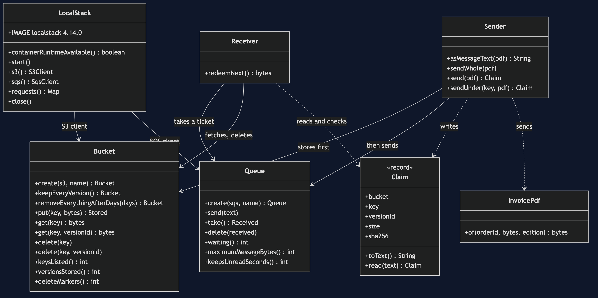
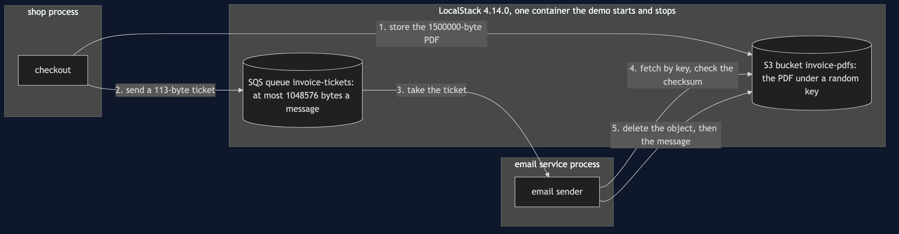
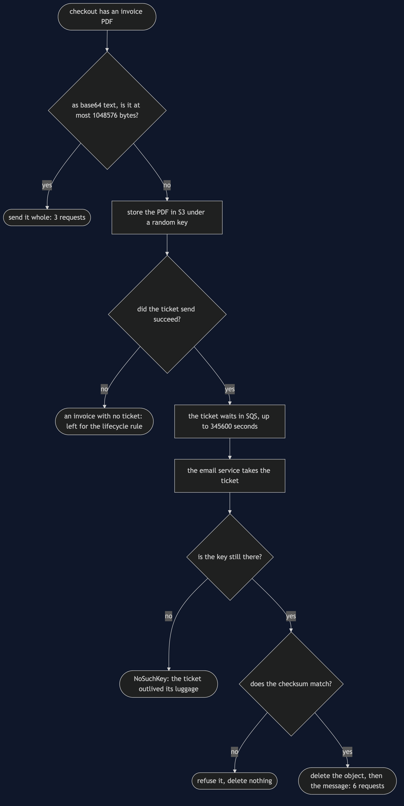
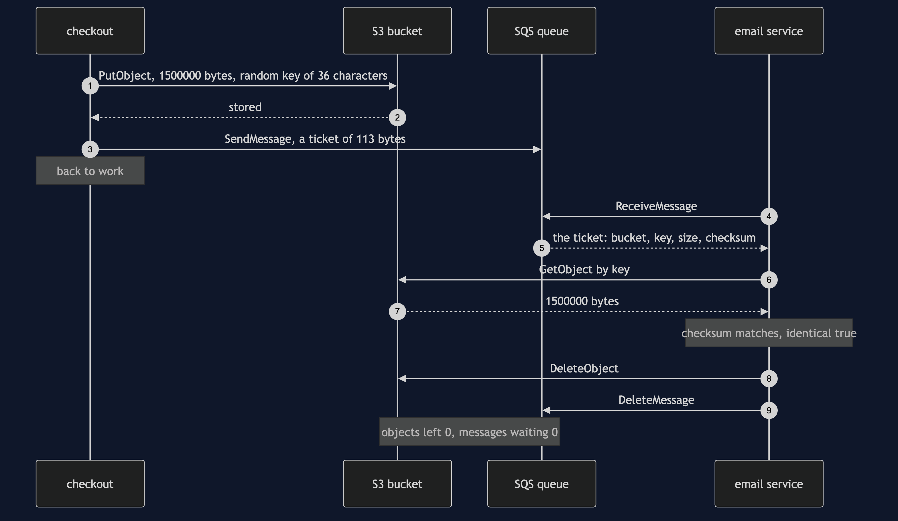
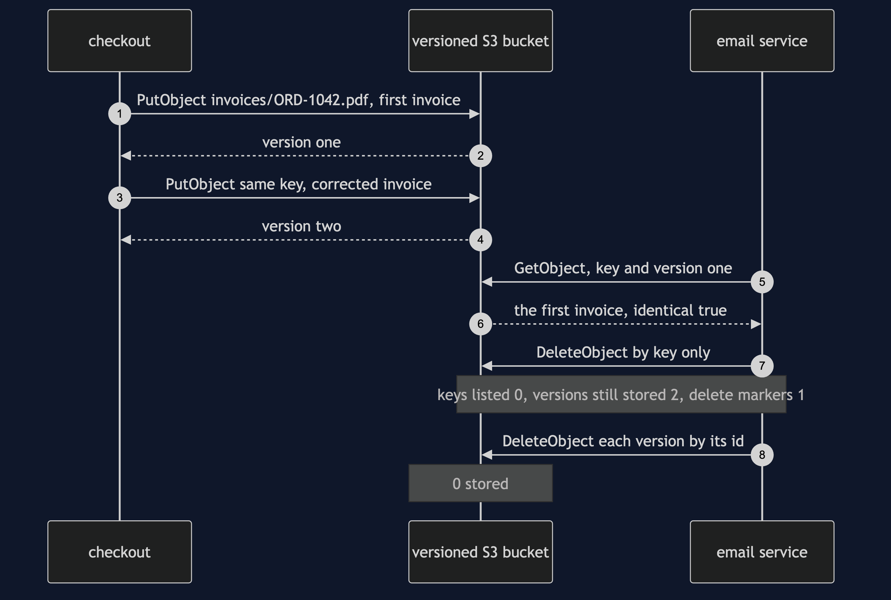
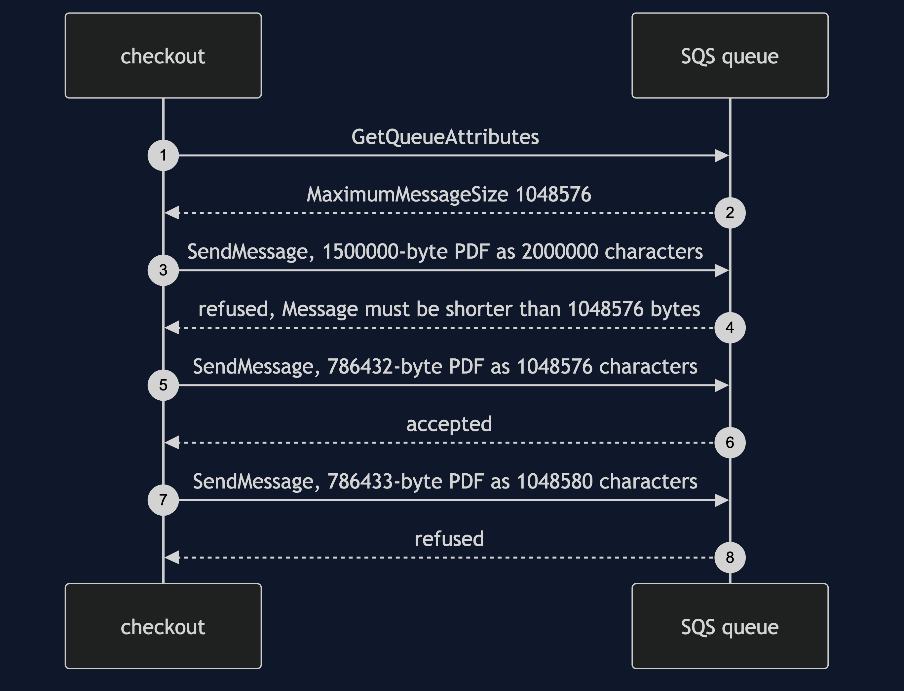
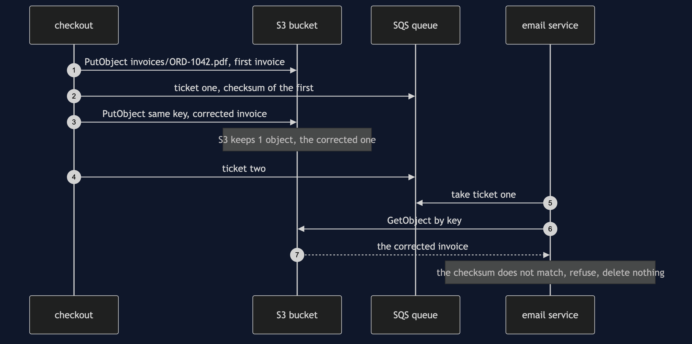
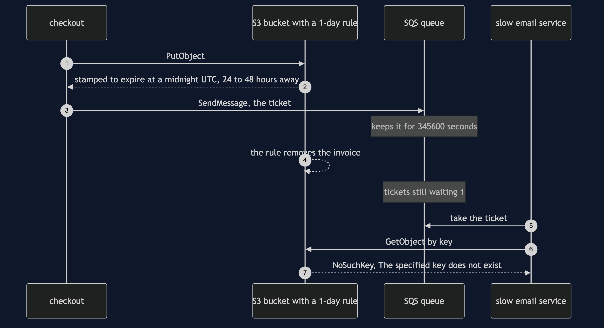

Claim Check with S3 Pattern
src/main/java/com/jk/explore/claimchecks3/
├── ClaimCheckS3Demo.java the six acts
├── Sender.java store the PDF first, then send the ticket
├── Receiver.java take the ticket, fetch, check, then clear up both
├── Claim.java the ticket: bucket, key, version, size, checksum
├── Bucket.java one S3 bucket: put, get, versions, lifecycle rule
├── Queue.java one SQS queue: send, take, delete, its limit and retention
├── LocalStack.java starts and stops LocalStack; counts every request
├── InvoicePdf.java a deterministic invoice PDF of any size
└── Poll.java every wait is a question asked until the answer is yesOn real Amazon SQS the limit is not yours to choose, and it counts text, not bytes: a 786433-byte invoice PDF is refused because base64 turns it into 1048580 characters. The claim check sends a 113-byte ticket instead, and S3 brings back all 1500000 bytes — but S3 will also let two invoices share a key, and in a versioned bucket a delete keeps every byte.
This project needs a container runtime. Docker Desktop, or anything Docker-compatible, must be running before you start. The demo brings LocalStack up in one container, playing Amazon S3 and Amazon SQS, and takes it down again at the end; nothing is installed, no AWS account is needed, and nothing is left behind. With no runtime, the demo prints two sentences saying what to do, and stops, rather than a stack trace.
This project is the real-infrastructure version of the plain-Java Claim Check project in this course. That project built the broker and the storage itself. This one uses Amazon's queue and Amazon's storage, through LocalStack, and shows what the real services decide that a simulation leaves to its author.
Run
./gradlew runSix acts, against real S3 and SQS APIs. Every number quoted below, and in every document and slide in this project, comes from this program's own output. Two runs back to back print exactly the same thing.
ONE. An invoice too big for the queue.
the email service's queue is on Amazon SQS, played by LocalStack. it reports its longest message as 1048576 bytes.
a business customer's monthly invoice is a PDF of 1500000 bytes. a message is text, so it goes as base64: 2000000 characters.
SQS refuses it: Message must be shorter than 1048576 bytes.
a PDF of 786432 bytes becomes 1048576 characters and is accepted. one byte more, 786433, becomes 1048580 and is refused.
base64 spells 3 bytes with 4 letters, so the largest PDF that fits is three quarters of the limit.
TWO. Send the ticket, not the luggage.
checkout stores the PDF in an S3 bucket under a random key of 36 characters, then sends a ticket.
the ticket is 113 bytes of text: bucket, key, size 1500000, checksum bb8711d26a6daf29.
the email service takes the ticket and fetches 1500000 bytes, identical to what was sent: true.
it deletes the object, then the message. objects left in the bucket: 0. messages waiting: 0.
THREE. Luggage nobody collected.
checkout sends 10 invoices by ticket. the email service collects 6, then stops.
S3 still holds 4 invoices, and SQS still holds 4 tickets for them.
an 11th invoice is stored, and then its send fails: The specified queue does not exist.
S3 now holds 5 invoices and SQS holds 4 tickets. 1 invoice has no ticket, and nobody will ever ask for it.
FOUR. The same key, twice.
a bucket keyed by order: ORD-1042's invoice is stored under invoices/ORD-1042.pdf and its ticket sent.
a corrected invoice is stored under the same key before the first ticket is collected. S3 keeps 1 object.
the email service redeems the first ticket: the payload is not the one that was sent: the checksum does not match.
with versioning on, each store keeps its own version and the ticket names one. first ticket, identical to the first invoice: true.
the email service deletes the key as before. keys listed: 0. versions still stored: 2. delete markers: 1.
in a versioned bucket, delete hides the luggage and keeps paying for it. deleting each version by its id: 0 stored.
FIVE. How long each one waits.
the bucket gets a rule: remove every invoice 1 day after it was stored. a day is the smallest unit S3 takes.
the invoice comes back stamped to expire at a midnight UTC, between 24 and 48 hours away: true.
the queue keeps a ticket nobody has taken for 345600 seconds, which is 4 days.
the demo cannot wait a day, so it removes the invoice as the rule would. tickets still waiting: 1.
a slow email service redeems it: The specified key does not exist.
the ticket and the luggage each have their own clock, and nothing keeps the two in step.
SIX. The bill.
a 600000-byte invoice sent whole: 3 requests (SendMessage, ReceiveMessage, DeleteMessage). the queue carried 800000 bytes.
the same invoice by ticket: 6 requests (PutObject, SendMessage, ReceiveMessage, GetObject, DeleteObject, DeleteMessage). the queue carried 117 bytes.
twice the requests, two services to run and pay for, and a gap between storing and sending.
this demo needed 1 container for 1 queue service and 1 storage service.The first run downloads the LocalStack image, about 1.15 GB once unpacked, and takes longer. After that a run takes about twenty seconds. LocalStack listens on a free port Testcontainers picks, so it does not collide with anything else on 4566.
Test
./gradlew test3 test classes, 13 test methods. PlainPartsTest needs nothing installed: the ticket's text form, the invoice bytes, the base64 arithmetic and the reading of S3's expiry stamp. RealS3AndSqsTest starts one LocalStack container for the whole class and asks the services directly: SQS takes a message exactly at its limit and refuses one character more; a PDF under the limit is refused once it is text; a ticket brings back the same bytes and clears up both; an overwritten key is caught by the checksum and nothing is deleted; a delete by key in a versioned bucket leaves both versions; a ticket whose luggage is gone gets NoSuchKey; a failed send after a store leaves an object with no ticket. DemoRunsTest runs the demo and asserts every figure the documents quote.
There is no Thread.sleep anywhere under src/test. Every wait is a poll on something the services can actually be asked — how many messages are waiting, whether a message has been handed over — with a sixty-second limit that fails the test rather than hanging it. The tests that need LocalStack are skipped when no container runtime is there; the rest still run. Every container is removed at the end of the demo and of each test class.
What the simulation got right, and what it left out
This is the reason this project exists, so it comes before anything else.
What the plain-Java Claim Check project got right. All of the shape. Store the payload, send a ticket carrying an id, a size and a checksum, redeem it at the other end, check the checksum, delete what was collected, and sweep what was not. A ticket whose luggage has been swept gets an error, not the wrong file. Store-then-send can stop half way and leave luggage nobody has a ticket for. Every one of those holds on S3 and SQS, and this project's second, third and fifth acts reproduce them: 4 uncollected, 1 with no ticket at all, and a slow receiver told the key does not exist.
What it left out, first, and the headline find: the limit is the service's, and it counts text. The simulation's broker refused anything over a limit the program chose for itself, and it counted raw bytes. SQS reports its own limit, 1048576 bytes, and enforces it with its own words, "Message must be shorter than 1048576 bytes." And a message on SQS is text, so a PDF has to be spelled out as base64 first, 4 letters for every 3 bytes. The first act finds the real edge: a 786432-byte PDF becomes exactly 1048576 characters and is accepted; a 786433-byte PDF becomes 1048580 and is refused, though the file itself is well under the limit. The largest invoice that fits is three quarters of the number the service reports. (The refusal says "shorter than", but exactly 1048576 is accepted.)
Second: two invoices can share a key. The simulation's store handed out its own ids, so two payloads could never collide. S3 stores under whatever key it is given, and a second store under the same key silently replaces the first. The fourth act names files after their order, stores a corrected invoice for ORD-1042 before the first ticket is collected, and S3 keeps 1 object. Only the checksum on the ticket stops the email service sending the wrong invoice. This is why the second act uses a random key.
Third: a delete that deletes nothing. Turning on versioning fixes the collision — each store is kept, and a ticket that carries the version id gets exactly its own file back. But in a versioned bucket the receiver's ordinary delete by key removes no bytes at all. It adds a delete marker. Afterwards a listing shows 0 keys while 2 versions are still stored, and billed. Only deleting each version by its id brings it to 0.
Fourth: two clocks, and the smaller one is a day. The simulation's store expired a blob after a few ticks of its own clock. S3's lifecycle rule counts in whole days and stamps each object with the midnight UTC at which it will go, between 24 and 48 hours after it was stored. SQS, meanwhile, keeps an untaken ticket for 345600 seconds, 4 days, by default. Nothing links the two, so out of the box a ticket can outlive its luggage by days.
What the simulation had that the services do not. The simulation's guessable-id attack was a lesson the program could demonstrate with a loop of guesses. On S3, anybody allowed to list the bucket sees every key, random or not, so what protects the luggage is who may read the bucket, not how hard the key is to guess. LocalStack does not enforce permissions by default, so this project does not demonstrate it.
Technologies and versions
| What | Version | Why it is here |
|---|---|---|
| Java | 21 | The repository standard, via the Gradle toolchain block |
| Gradle | 9.2.1 | The wrapper in this directory; no separate install needed |
| LocalStack | 4.14.0 | Plays Amazon S3 and SQS in one container. Held back: later images refuse to start without a LocalStack account token |
| AWS SDK for Java v2 | 2.55.3 | s3 and sqs modules through the BOM, the newest release; the same code runs against Amazon itself |
| Testcontainers | 2.0.5 | testcontainers-localstack; starts and stops LocalStack from inside the demo |
| slf4j-simple | 2.0.17 | Logging for the libraries above, turned off so the demo's own output is the only output |
| JUnit 5 | 5.10.2 | Test runner |
| A container runtime | Docker 24 or later, or compatible | Runs LocalStack. Must be running before you start |
Every version is the newest generally available release except LocalStack, which is held at 4.14.0 for the reason above. See docs/dependencies.md and docs/prerequisites.md.
Learning Material
| Document | What it covers |
|---|---|
docs/problem-statement.md | An invoice too big for the queue, and what is new |
docs/claim-check-with-s3-pattern-explained.md | The services' words in plain language, and six acts |
docs/class-diagram.md | The types |
docs/architecture-diagram.md | Two services in one container, and where the invoice lives |
docs/data-flow-diagram.md | What happens to one invoice |
docs/sequence-diagram.md | Written for a listener with the screen off |
docs/uml-diagram.md | Four sequences |
docs/animation.html | The six acts in a browser |
docs/prerequisites.md | What you need installed, and what you need to know |
docs/session.md | A one-hour taught session |
docs/dependencies.md | What LocalStack, the AWS SDK and Testcontainers are, what they cost, and why LocalStack is held back |
docs/spec.md | The generated specification |
docs/youtube.md | Title, description and chapters |
The pattern in one picture

Where each piece sits

How one request moves

Who calls whom, in order

All four sequences




Video
Built from video/scenes.py by video/build_video.sh. The rendered file is not committed; see the repository README for why.
Where you have already met this
Amazon's SQS Extended Client Library does exactly this, storing any message body over a threshold in S3 and sending a pointer. Azure Service Bus with Blob Storage, email systems that keep attachments apart from the message, and every "your download is ready" link are the same pattern.
When this is too much
If your payloads are small, a ticket doubles the requests and adds a second service for nothing. If the receiver needs the data at once and storage is slow, the ticket costs more than it saves. And it is always two services to run, secure and pay for, with a gap between storing and sending that has to be swept.
Where this sits
This project is the real-infrastructure version of the plain-Java Claim Check project, and sits in the micro-services design patterns category of this course.